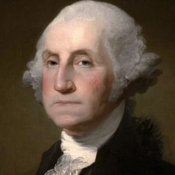

Abraham Lincoln was the 16th president of the United States and is regarded as one of America's greatest heroes due to his role as savior of the Union and emancipator of enslaved people. His rise from humble beginnings to achieving the highest office in the land is a remarkable story. Via Biography.com©

I admire Abraham as he freed the slaves, and helped people of color to be treated as humans
Martin Luther King Jr. was a Baptist minister and civil-rights activist who had a seismic impact on race relations in the United States, beginning in the mid-1950s. Via Biography.com©

Like alot of other people, I admire Martin Luther King because he was an activist that ALSO helped every human be treated equal
George Washington was a Virginia plantation owner who served as a general and commander-in-chief of the colonial armies during the American Revolutionary War, and later became the first president of the United States, serving from 1789 to 1797. Via Biography.com©
While he is a controversial figure, he was one of the founding fathers of the country we currently live in, thats why I admire him.